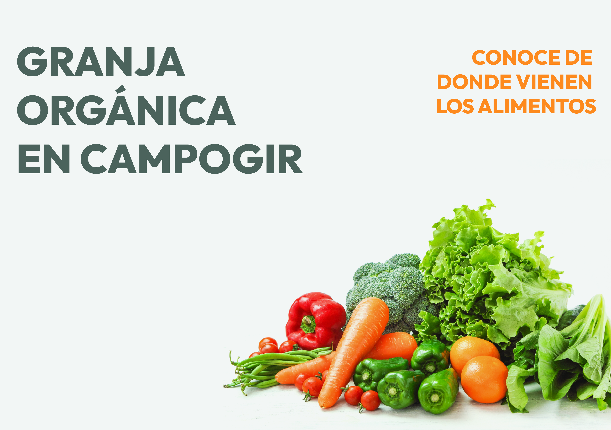

CAMPOGIR es una cooperativa de clase Multiactiva, que tiene como objetivo principal promover un modelo de desarrollo rural sostenible y sustentable, mediante la prestación de servicios de operativos, logísticos, asistenciales, profesionales y de apoyo a la gestión en forma directa a sus asociados y a la comunidad en general.
Gracias al acompañamiento del Politécnico Colombiano, JAIME ISAZA CADAVID, a través del profesor GABRIEL ACEVEDO y en compañía de los coordinadores del proyecto “Fortalecimiento a la Asociatividad en el Municipio de Girardota ”, sra. DORIS CASTRILLON y Sr. JUAN ESTEBAN MARIN TOBON y la Secretaria de agricultura, Desarrollo Rural y Medio Ambiente del municipio, se realiza el diagnóstico donde se trazaría la ruta a seguir para dar solución al problema de comercialización de los productos agropecuarios.
